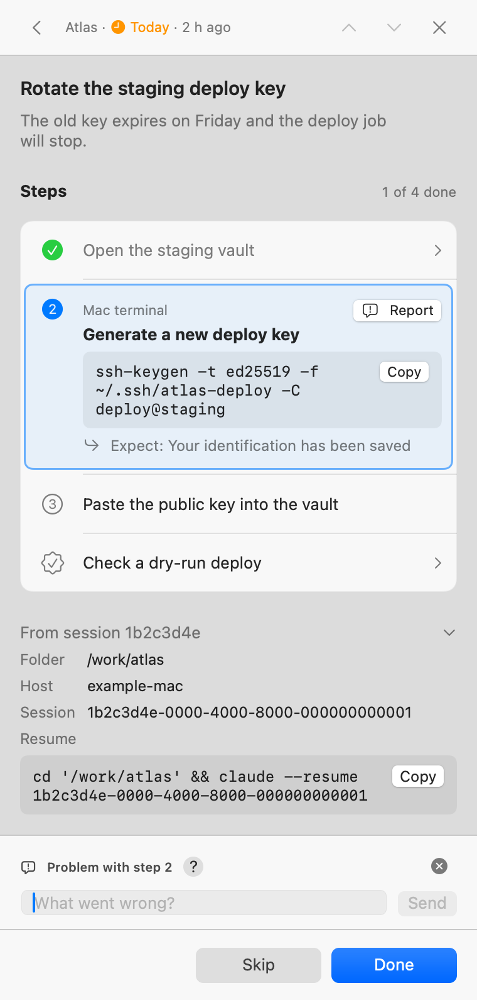

Hook
Everything your coding agents need from you, in one calm queue on your Mac.
When a session needs a key, a decision or a manual step, it lands in Hook as numbered steps with exact commands and a Copy button. You follow them, press Done or reply, and the session that asked carries on with your answer.
- One queue for Claude Code, Codex, Cursor and 15 more agents
- Steps you can follow without stopping to think
- Your answer goes back to the session by itself
Sessions get stuck on you
A coding session regularly reaches something only you can do: paste an API key, click through a web console, approve a migration, or choose between two options. It writes a line saying it is waiting on you, and that line scrolls away with the rest of the session. With several agents running, nobody keeps track of who is waiting for what.
Hook turns each of those moments into an ask: a short, exact checklist, in one queue you can open from any app. Your answer goes back to the session that asked, so it can carry on.
One round trip per ask
This Mac only
The default. The queue lives inside Hook, in a file in your Library folder, served only on 127.0.0.1. Asks never leave the Mac.
Pond
A small server you run holds the queue, and Hook checks it every 15 seconds. Asks can then reach you away from the Mac, on Telegram. Hook ships no Pond server.
Steps you can follow without thinking
An agent writes each ask as an instructable: a small JSON document with a title, a reason, numbered steps and a final check. Hook checks it before showing it, then gives every command its own Copy button.
acme-briefCopy- title
- One line that says what to do. The same title isn't posted twice within 24 hours.
- why
- One sentence on what it unblocks.
- urgency
- now notifies and slides the panel in, today notifies, whenever waits quietly. You can change which ones notify.
- steps
- One to twenty, with sub-steps. Each says what to do and where, with an exact command to copy, a page or a document to open, what you should see, or a question to answer.
- verify
- A last check that proves it worked.
- reply
- A typed answer, or one of up to six choices.
- done
- What must be finished before Done turns on. See section 04.
- from
- Filled in for you: the folder, the Mac and the session, with a command that resumes it.
Finish what the session can't do without
An ask can mark the steps it can't do without, and can also wait for your reply or a message from you. Done stays off until every marked item is finished. Skip always works.
ssh-keygen -t ed25519 -f ~/.ssh/atlas-deployCopy| On a step | What you see |
|---|---|
required | A mark on the step number. Done stays off until it is ticked, its question answered, or every sub-step finished. |
blocking | A tinted warning box. The steps after it stay locked (“Finish step 2 first”) until it is done. |
optional | “Optional” at the end of the row. You can tick it done without doing it. |
done | On the ask: any of steps, reply and message must be finished first. |
Order or finishing
blocking is about order; required is about finishing. A step can be both, but never required and optional.
Where it works
Required items need a Pond 1.3.0 or newer. This Mac mode doesn't take them yet, and the session's post is refused with a clear message. Telegram shows no Done button until everything is finished.
$ relay status 7f3a2c1e
open · Atlas · Rotate the staging deploy key
Left before Done: step 2, step 3, the reply
Using Hook
The menu-bar icon
A red badge counts waiting asks from 1 to 9, and turns into a dot from 10 up. Hover for a summary. Right-click for Presence, Refresh, Panel, Settings, About, Check for Updates and Quit.
The panel
Docked to the left or right edge of any display, full height. Drag it by its top bar to move it. A “now” ask slides it in without taking focus from the app you're typing in.
The queue
Group by project or urgency, filter to one project, and find the last 24 hours under Recently closed, each with Reopen. The status bar shows This Mac or your Pond; click it to switch.
An ask
Tick steps as you go. Copy takes a command exactly as shown, with no trailing newline, so a paste never runs by itself. Questions on a step each have their own Send.
| Keys | What they do |
|---|---|
| ⌃⌥⌘R | Show, focus or hide the panel from any app. Change or turn off the shortcut in Settings › General. |
| ↑ ↓ ↩ | Move through the list and open an ask. |
| ⌘↩ ⌘⌫ | Done or Skip. With something unsent, Done warns first. |
| ⌘T ⇧⌘C | Tick the current step; copy its code. |
| ⌘S | Send every unsent step answer and keep the ask open. |
| ⌘L | Focus the reply field, or the Messages field on an ask without a reply prompt. |
| ⌃⌘G ⌃⌘P | Switch grouping; show only this project. |
| ⌘Z | Undo the latest Done or Skip. |
| Esc | Back to the list, then hide the panel. |
Five tabs, one config file
| Tab | What you set there |
|---|---|
| General | The shortcut, presence and away time, start at login, the badge count, where documents open, the terminal for Resume Session, Privacy (crash reports and the activity log), appearance and updates. |
| Panel | The edge and display, Re-dock Now, whether “now” asks slide the panel in, and what happens after Done or Skip. |
| Queue | This Mac only or Pond, how long closed asks stay, the Pond's address and token file, its connection and version, Send a Test Ask, and the owner key. |
| Notifications | Which urgencies notify, sound, permission and a test notification. |
| Agents | Every coding agent on this Mac and what Hook set up in it, Reinstall All, and Set up new agents automatically. |
Every “?” button explains its row. Settings writes ~/.config/relay/config.json, and Hook applies an edit to that file without a restart.
First run
A new install opens Set Up Hook: where asks come from, your agents, notifications, the shortcut and login item, and a test ask. Anything you skip is in Settings. Run it again from About Hook.
Away mode
When the screen locks, the displays sleep or you've been idle for 10 minutes, Hook marks you away: no slide-ins, no notifications. When you're back, one notification counts what arrived.
Documents in a step
A step can point to a file on your Mac. Hook opens Markdown and text in its own offline viewer, and other documents in their app. It never opens apps, scripts or installers.
Resume Session
From a card or an ask's ⋯ menu, opens a new terminal window in the session's folder and resumes the Claude Code session that asked. Pick the terminal in Settings › General.
Say something without opening its terminal
With a Pond, you can reach the session that posted an ask from the ask itself. Neither works in This Mac mode, and the Pond refuses a note or message that looks like a secret.


- Report a ProblemAn open step with code or a tick ends with a Report button. Type what went wrong in one line, up to 300 characters. The session gets it as a quoted report about that step, never as an instruction, and the step shows a filled icon until the session corrects it. Needs this Mac's owner key.
- MessagesWith a Pond 1.2.0 or newer, an open ask has a Messages section. A message answers, closes and changes nothing; only the session that posted the ask sees it. ⌘↩ sends.
- Verified or notA message counts as yours only when Hook signed it with this Mac's owner key. Sessions treat an unsigned one as data and tell you about it.
A changed ask waits for your review

A session can correct an ask it posted while it is open, such as a wrong port or a missing step, instead of closing it and posting a new one. Hook checks the whole history first: every version is hashed and names the one before.
- The ask locksUntil you review it, Copy, links, files, answers, ticks and Done are off. Skip always works.
- One diffFrom the version you last accepted on this Mac to the newest, with changed, new and moved steps marked.
- Look closerHook flags a new host,
sudo,rm -rf, a download piped into a shell,evaland non-ASCII characters. These checks are incomplete: no flag never means safe. - Use Version NAccepting a changed command, link or file asks for Touch ID or your password.
Your answers, told apart from a session's
- Open Settings › Queue › Owner Key and press Set Up This Mac…. Hook makes a key in your Keychain and shows a six-digit code.
- The Pond sends a request to your Telegram. Check it shows the same code, then tap Approve. If it doesn't, or you didn't start this, tap Refuse.
- Once two Macs are approved, Require Owner Key… stops sessions and scripts from answering, pressing Done or reopening as you.
The Pond stores only the key's hash. Corrections and the owner key need a Pond 1.1.0 or newer at an https address.
One install sets up every agent
Hook sets itself up in every coding agent it finds on your Mac, keeps that setup in step with each Hook update, tells you when you've edited something it wrote, and removes exactly what it wrote.

Four pieces
The relay MCP server, the instructables skill, one short instructions text and, where the agent has one, the replies hook. Each goes in the agent's own way: its CLI, a plugin, a file Hook owns, one key or a marked block.
Kept up to date
Setup runs at the end of every install and update, after launch when something changed, and daily. Configs point at a stable path, so an update never needs approving again.
Your edits stay yours
Hook records a hash of everything it writes. It never overwrites a file you edited without asking, and never rewrites a file that doesn't parse.
Your steps
Anything only you can do, such as trusting Hook's hook in Codex or reloading Cursor, arrives once as an ask in your queue.
Eighteen agents, one queue
Replies says when your answers show in a session: before each prompt, at session start (the last 24 hours), or not at all, in which case the session checks with relay_list. Tested says whether the entry has been tried on a real Mac yet, or follows the agent's docs and Hook's fixture tests only.
| Agent | Set up through | Replies | Your step | Tested |
|---|---|---|---|---|
| Claude Code | Hook plugin, user MCP server, rules file | per prompt | none | Not yet |
| Codex | codex mcp add, AGENTS.md block, hooks | per prompt | Trust the hook in /hooks, once | Not yet |
| Gemini CLI | extension | per prompt | none | Not yet |
| Antigravity CLI | plugin | session start | none | From docs |
| Copilot CLI | copilot mcp add, instructions file, hooks | session start | none | Not yet |
| VS Code Copilot | Copilot CLI's files | session start | none | From docs |
| Cursor | local plugin | session start | Reload Window after an update | Not yet |
| OpenCode | opencode.json, plugin | per prompt | none | Not yet |
| Zed | settings.json, AGENTS.md block | none | none | Not yet |
| pi | mcp.json, AGENTS.md block, extension | per prompt | none | Not yet |
| Devin | devin mcp add, rules file | per prompt | none | From docs |
| Factory Droid | droid mcp add, AGENTS.md block | per prompt | none | From docs |
| Kiro | kiro-cli mcp add, steering file | none | none | From docs |
| Amp | amp mcp add, AGENTS.md block, plugin | per prompt | none | From docs |
| Cline | cline mcp add, rules file | none | none | From docs |
| Goose | config.yaml, .goosehints block | none | none | From docs |
| Junie | mcp.json, AGENTS.md block | none | none | From docs |
| Warp | .mcp.json | none | Paste Hook's rule into Settings › AI › Rules | From docs |
Where an agent's command isn't installed, Hook writes the same key into its config file instead. Adding an agent is a data change in integration/harnesses.json; the installer has no agent-specific code.
What every agent gets
| Piece | What it does |
|---|---|
relay_post | Posts an ask and returns its id and a link to open it. |
relay_status | Reads an ask: its status, who closed it, your answers and messages, and what's left before Done. |
relay_list | Lists every open ask. |
relay_amend | Corrects an open ask this Mac posted, with a one-line reason. |
The relay command | The same from any terminal or script: post, status, list, done, skip, replies, wait, amend. It is also linked as hook. |
| The instructables skill | Teaches the agent when to ask and how to write steps a person can follow. |
| The replies hook | Shows your new answers in the session, before each prompt or at session start. |
The MCP server and its tools keep their relay names from before the rename, so existing sessions, skills and permission lists keep working.
$ relay wait 3f2a9c1e
[Acme] Create a Slack channel for Acme
↳ owner reply 2026-11-04T09:12:04+00:00: C07ABC123
last seq: 41
relay post refuses a value to copy written inside a step's text, such as a URL, a path or a command, and says which sub-step's code it belongs in. It also refuses keys your Pond is too old for, before anything is sent.One command, nothing to compile
You need macOS 14 or later and Python 3.9 or later, for the relay command and the MCP server. Hook has no third-party Python dependencies.
curl -fsSL https://raw.githubusercontent.com/xooxoxxo/hook/main/scripts/get.sh | bash
- The script downloads the latest release and its
SHA256SUMS, and refuses a zip that doesn't match. - It installs Hook.app to
~/Applications, and therelaycommand, MCP server and skill to~/.local/share/hook. It starts Hook and adds it to your login items. - Last, it sets up the agents it finds. Open Settings › Agents to see what it did.
- In Settings › Queue, click Send a Test Ask. A badge appears on the menu-bar icon; open the ask and press Done.
Hook-<version>.zip downloaded in a browser. A curl download isn't quarantined. The zip and its checksums are on the latest release at github.com/xooxoxxo/hook/releases.| To | Do this |
|---|---|
| Update | Check for Updates… in the menu-bar menu or Settings › General. Hook downloads, checks and installs the release in the background, and restarts. Running the one-liner again does the same. Your settings are kept. |
| Keep it local | Add | bash -s -- --local to the one-liner to use This Mac only. |
| Go back | A failed update links the version before back in place. Nothing is removed until a new version installs. |
| Uninstall | ~/.local/share/hook/current/scripts/install.sh --uninstall removes what Hook set up in your agents, then the app, login item and command links. It keeps your config and queue, and prints their paths. |
Nothing leaves without you

If Hook quit unexpectedly, the next launch docks a bar in the panel: Hook quit unexpectedly, with Not Now and Review…. Nothing has been sent at that point.
- GitHubThe default. Hook opens a prefilled issue in your browser for you to submit, or the existing issue for the same crash. Before that it makes one search for the crash's 12-character signature, a hash.
- My PondFiles the report on your own Pond as a Hook bug, signed with the owner key.
- Your choiceSettings › General › Privacy: Ask Each Time, Send Automatically (to your Pond) or Off.
A report holds
Hook and macOS versions, CPU type, the queue source and Pond version, the exception and Hook's own frames, and the last 40 lines of the activity log, redacted twice. Never the macOS crash file itself.
The activity log never holds
Ask ids, titles, step text, replies, answers, messages, file paths inside asks, tokens, the owner key or your Pond's address. It records typed events only, and stays on this Mac.
No crash-reporting service is linked into Hook. The log is ~/Library/Logs/Hook/hook.log; it rolls at 512 KB, so the two files stay under 1 MB.
Safe to run on a work Mac
In This Mac only mode, the queue never leaves the Mac. Hook talks only to programs on the same Mac that hold its key.
- Local onlyHook listens on 127.0.0.1, never the network. Every call needs a 256-bit token kept in a file only your account can read.
- Web pages can't reach itRequests from a browser are refused and no CORS headers are sent, so a website can't post asks or read them.
- Sessions can't answer for youOnly the app records your answers, and every answer says who closed the ask. With Require the owner key on, sessions and scripts can't act as you on the Pond either.
- Corrections are checkedA corrected ask stays locked until you review it, and a history that changed on the Pond stops every act but Skip.
- What you see is what you copyHidden characters show as ⟨U+200B⟩, links show their real host, and Copy never adds a newline that would run a command.
- Documents onlyA file in a step opens only if it is a known document type on a local disk. Apps, scripts, installers and network paths are never opened.
- Quiet logsLogs hold typed events and redacted errors, never tokens or the text of an ask.
The threat model and what Hook doesn't defend against are in SECURITY.md in the repository. Report a vulnerability privately, from the repository's Security tab, never in a public issue.